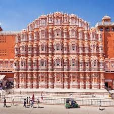

| Destination | Details |
|---|
| |
|---|
Statue of Unity | The Statue of Unity is a statue of Indian statesman and independence activist Vallabhbhai Patel, who was the first deputy prime minister and home minister of independent India and an adherent of Mahatma Gandhi. |
Taj Mahal | The Taj Mahal is an ivory-white marble mausoleum on the right bank of the river Yamuna in the Indian city of Agra. It was commissioned in 1632 by the Mughal Emperor Shah Jahan. |
| Jaipur | Jaipur is the capital of India’s Rajasthan state. It evokes the royal family that once ruled the region and that, in 1727, founded what is now called the Old City, or 'Pink City' for its trademark building color. At the center of its stately street grid (notable in India) stands the opulent, colonnaded City Palace complex. With gardens, courtyards and museums, part of it is still a royal residence. |
Ladakh | Ladakh is a region administered by India as a union territory, and constitutes a part of the larger Kashmir region, which has been the subject of dispute between India, Pakistan, and China since 1947. |